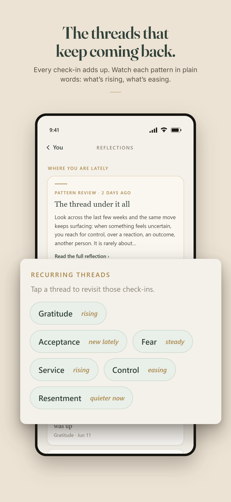

Work the Steps
The question: can one operator ship a consumer AI product that holds a sensitive conversation safely, at a sustainable per-user cost?
A paid iOS app with a Claude-powered conversational guide, built for the 12-step recovery community. Daily check-ins become saved reflections, reflections surface recurring themes, and themes feed structured step work, so the hardest part of the program never starts from a blank page.
Operator decisions baked in: a controlled voice and prompt architecture; per-user cost guardrails (prompt caching, daily fair-use caps, hard spend limits); crisis resources that bypass every gate and are never paywalled; end-to-end encryption with data kept on the device; subscriptions, trials, and App Store compliance.

Status: in final App Store review. Stack: React Native, Claude API behind a rate-limited relay, RevenueCat.
workthesteps.app →Virtual TC
The question: how much of a transaction coordinator's intake can AI run against real contracts with real deadlines?
An 11-module pipeline. An executed purchase agreement goes in; a structured deal record, a client timeline email, and calendar deadline events come out, in minutes.
Built for messy reality: extraction against scanned, inconsistent PDFs; deadline logic derived from the contract's own terms; framed AI-assisted and human-verified, because liability lives in the gaps.

Status: pipeline complete, brokerage pilot in motion. Stack: Make.com, Claude API, Airtable, Gmail, Google Calendar.
Read the build story →The Institutional-Knowledge Assistant
The question: can years of accumulated support nuance be captured so a team stops depending on any one person's memory?
An internal AI assistant built inside my day job at an enterprise B2B SaaS company. An agent pastes a customer question and gets a grounded draft response, built from full product documentation plus the judgment patterns that usually take years of exposure to accumulate. It normalizes response quality, speeds up ticket handling, and carries the new-hire training load.
Status: built and deployed inside an enterprise B2B SaaS support team.
Also in production: two local lead-generation properties with end-to-end measurement (GA4, Google Tag Manager, Search Console, conversion-event wiring) and AI-discoverability work. They are the testing ground for how I instrument funnels and prove outcomes.